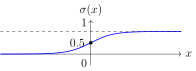
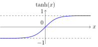
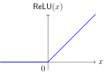
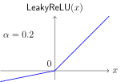
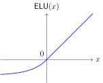
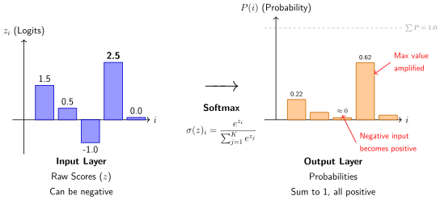
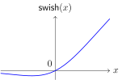

激活函数#
基本概念#
激活函数（Activation Function）是神经网络中的非线性变换函数，它决定了神经元是否被激活以及激活的程度。激活函数引入了非线性因素，使得神经网络能够学习和表示复杂模式。
激活函数的作用
引入非线性：使神经网络能够逼近任意复杂函数
决定输出范围：控制神经元输出的数值范围
影响梯度流动：影响反向传播中梯度的计算和流动
稀疏激活：某些激活函数可以产生稀疏激活，提高计算效率
常见激活函数#
1. Sigmoid函数#
Sigmoid函数将输入压缩到(0,1)区间，常用于二分类问题的输出层：
导数：
特点：
输出范围(0,1)，可解释为概率
平滑可导，适合梯度下降
容易导致梯度消失（当输入绝对值较大时梯度接近0）
输出不是零中心的，可能导致优化困难
PyTorch实现：
import torch.nn as nn
sigmoid = nn.Sigmoid()
output = sigmoid(input)
可视化：

2. Tanh函数（双曲正切）#
Tanh函数将输入压缩到(-1,1)区间，是零中心的：
导数：
特点：
输出范围(-1,1)，零中心
梯度消失问题比sigmoid稍好
常用于循环神经网络（RNN）的隐藏层
PyTorch实现：
tanh = nn.Tanh()
output = tanh(input)
可视化：

3. ReLU函数（Rectified Linear Unit）#
ReLU是目前最常用的激活函数，计算简单且能缓解梯度消失问题：
导数：
特点：
计算高效，只有比较和乘法操作
缓解梯度消失问题（正区间梯度为1）
可能产生"死亡神经元"（输入始终为负时梯度为0）
输出不是零中心的
PyTorch实现：
relu = nn.ReLU()
output = relu(input)
可视化：

4. Leaky ReLU#
Leaky ReLU是ReLU的改进版本，在负区间引入一个小的斜率：
其中 \(\alpha\) 是一个小的正数（通常取0.01）。
导数：
特点：
解决了"死亡神经元"问题
保持了ReLU的计算效率
需要选择超参数 \(\alpha\)
PyTorch实现：
leaky_relu = nn.LeakyReLU(negative_slope=0.01)
output = leaky_relu(input)
可视化：

5. ELU函数（Exponential Linear Unit）#
ELU在负区间使用指数函数，使得输出均值接近零：
其中 \(\alpha\) 是超参数（通常取1.0）。
导数：
特点：
输出均值接近零，加速收敛
负区间平滑，对噪声更鲁棒
计算比ReLU稍复杂
PyTorch实现：
elu = nn.ELU(alpha=1.0)
output = elu(input)
可视化：

6. Softmax函数#
Softmax函数将向量转换为概率分布，常用于多分类问题的输出层：
其中 \(C\) 是类别数。
导数：
特点：
输出为概率分布，总和为1
通常与交叉熵损失配合使用
对输入数值范围敏感（容易导致数值不稳定）
PyTorch实现：
softmax = nn.Softmax(dim=1) # dim指定计算softmax的维度
output = softmax(input)
可视化：

7. Swish函数#
Swish函数是Google提出的自门控激活函数：
其中 \(\beta\) 是可学习参数或固定值（通常取1.0）。
导数：
特点：
平滑、非单调
在某些任务上表现优于ReLU
计算成本较高（需要sigmoid计算）
PyTorch实现：
class Swish(nn.Module):
def __init__(self, beta=1.0):
super().__init__()
self.beta = beta
def forward(self, x):
return x * torch.sigmoid(self.beta * x)
swish = Swish()
output = swish(input)
可视化：

激活函数比较#
激活函数 |
输出范围 |
是否零中心 |
梯度消失风险 |
计算复杂度 |
|---|---|---|---|---|
Sigmoid |
(0,1) |
否 |
高 |
中 |
Tanh |
(-1,1) |
是 |
中 |
中 |
ReLU |
[0,∞) |
否 |
低 |
低 |
Leaky ReLU |
(-∞,∞) |
否 |
低 |
低 |
ELU |
(-α,∞) |
近似是 |
低 |
中 |
Softmax |
(0,1) |
否 |
中 |
高 |
激活函数的选择原则#
1. 隐藏层激活函数#
默认选择：ReLU及其变体（Leaky ReLU、ELU）
深层网络：考虑使用Swish或Mish
循环神经网络：Tanh或Sigmoid
2. 输出层激活函数#
二分类：Sigmoid
多分类：Softmax
回归：线性激活（无激活函数）或根据输出范围选择
3. 特殊考虑#
梯度流动：避免使用容易导致梯度消失的激活函数（如Sigmoid）在深层网络
计算效率：在计算资源受限时选择ReLU
稀疏性：ReLU能产生稀疏激活，有利于特征选择
激活函数的梯度分析#
梯度消失与爆炸#
Sigmoid/Tanh：当输入绝对值较大时梯度接近0，容易导致梯度消失
ReLU：正区间梯度为1，缓解梯度消失；但负区间梯度为0可能导致"死亡神经元"
Leaky ReLU/ELU：负区间有非零梯度，缓解"死亡神经元"问题
梯度计算优化#
def check_activation_gradients(model, input_data):
"""检查激活函数的梯度"""
model.zero_grad()
output = model(input_data)
loss = output.sum()
loss.backward()
for name, param in model.named_parameters():
if param.grad is not None:
grad_mean = param.grad.abs().mean().item()
print(f"{name}: gradient mean = {grad_mean:.6f}")
激活函数的初始化配合#
神经网络的权重初始化对训练过程的收敛速度和最终性能有重要影响。不恰当的初始化可能导致梯度消失或爆炸，使得网络难以训练。不同的激活函数具有不同的非线性特性，因此需要匹配的初始化策略来保持前向传播中信号的方差和反向传播中梯度的稳定性。
Xavier初始化#
Xavier初始化（也称为Glorot初始化）由Xavier Glorot和Yoshua Bengio提出，旨在保持前向传播中信号的方差和反向传播中梯度的方差大致相同，从而避免梯度消失或爆炸。
数学原理： 对于线性层 \(y = Wx + b\)，假设输入 \(x\) 和权重 \(W\) 独立且均值为零，Xavier初始化设定权重的方差为：
其中 \(n_{\text{in}}\) 是输入神经元数，\(n_{\text{out}}\) 是输出神经元数。对于均匀分布，权重从 \([-\sqrt{\frac{6}{n_{\text{in}}+n_{\text{out}}}}, \sqrt{\frac{6}{n_{\text{in}}+n_{\text{out}}}}]\) 中采样；对于正态分布，标准差为 \(\sqrt{\frac{2}{n_{\text{in}}+n_{\text{out}}}}\)。
特点：
适用于S型激活函数（Sigmoid、Tanh），因为这些函数在零点附近近似线性，且梯度在零点最大。
能够保持各层激活值的方差稳定，避免梯度消失。
假设激活函数关于零点对称且梯度在零点附近接近1（Tanh满足，Sigmoid不严格满足但实践中可用）。
流程：
计算当前层的输入维度 \(n_{\text{in}}\) 和输出维度 \(n_{\text{out}}\)。
根据公式计算方差或标准差。
从相应分布中采样权重。
偏置初始化为零。
PyTorch实现：
def xavier_init(m):
if isinstance(m, nn.Linear):
nn.init.xavier_normal_(m.weight)
if m.bias is not None:
nn.init.zeros_(m.bias)
model.apply(xavier_init)
He初始化#
He初始化（也称为Kaiming初始化）由何恺明等人提出，专门为ReLU及其变体设计。由于ReLU在负区间输出为零，其非线性特性与S型激活函数不同，Xavier初始化的方差假设不再适用。He初始化通过调整权重方差来补偿ReLU的"半波整流"效应，确保信号在前向和反向传播中保持稳定的方差。
数学原理： 对于线性层 \(y = Wx + b\)，假设输入 \(x\) 和权重 \(W\) 独立且均值为零，且激活函数为ReLU（仅正区间有梯度）。He初始化设定权重的方差为：
其中 \(n_{\text{in}}\) 是输入神经元数（fan_in模式）。对于均匀分布，权重从 \([-\sqrt{\frac{6}{n_{\text{in}}}}, \sqrt{\frac{6}{n_{\text{in}}}}]\) 中采样；对于正态分布，标准差为 \(\sqrt{\frac{2}{n_{\text{in}}}}\)。如果使用fan_out模式，则方差基于输出神经元数 \(n_{\text{out}}\)。
特点：
专门为ReLU、Leaky ReLU、ELU等非对称激活函数设计。
能够防止ReLU网络的梯度消失，因为ReLU的梯度在正区间为1，但只有一半的神经元被激活，需要更大的方差来维持信号强度。
假设激活函数在零点导数为1（ReLU在正区间满足），且输入分布对称。
流程：
确定当前层的输入维度 \(n_{\text{in}}\)（或输出维度 \(n_{\text{out}}\)，根据模式选择）。
根据公式计算方差或标准差。
从相应分布中采样权重。
偏置初始化为零。
PyTorch实现：
def he_init(m):
if isinstance(m, nn.Linear):
# 使用fan_out模式适用于全连接层（默认fan_in也可）
nn.init.kaiming_normal_(m.weight, mode='fan_out', nonlinearity='relu')
if m.bias is not None:
nn.init.zeros_(m.bias)
model.apply(he_init)
变体：
对于Leaky ReLU，指定
nonlinearity='leaky_relu'并设置a参数（负斜率）。对于ELU，同样可以使用He初始化，因为其正区间线性，负区间指数，但方差调整类似。
对比与选择建议#
Xavier初始化和He初始化各有其适用场景，选择哪种初始化取决于激活函数的特性。
特性 |
Xavier初始化 |
He初始化 |
|---|---|---|
提出者 |
Xavier Glorot & Yoshua Bengio (2010) |
Kaiming He et al. (2015) |
适用激活函数 |
Sigmoid、Tanh等S型函数 |
ReLU、Leaky ReLU、ELU等非对称函数 |
数学假设 |
激活函数在零点对称、梯度接近1 |
激活函数在正区间线性、负区间为零（或小斜率） |
方差公式 |
\(\text{Var}(W) = \frac{2}{n_{\text{in}} + n_{\text{out}}}\) |
\(\text{Var}(W) = \frac{2}{n_{\text{in}}}\)（fan_in模式） |
优点 |
保持S型网络前后向方差稳定 |
有效防止ReLU网络的梯度消失 |
缺点 |
用于ReLU可能导致信号衰减 |
用于Sigmoid/Tanh可能导致梯度爆炸 |
PyTorch函数 |
|
|
选择指南：
使用Sigmoid或Tanh激活函数：优先选择Xavier初始化。
使用ReLU、Leaky ReLU、ELU等：优先选择He初始化。
混合激活函数网络：如果网络中同时包含S型和ReLU层，可以分层初始化，或默认使用He初始化（因为ReLU更常见）。
不确定时：使用He初始化作为默认选择，因为现代深度网络大多使用ReLU及其变体。
实践验证：通过监控激活值的分布和梯度幅值来调整初始化参数。
实践建议#
1. 激活函数组合#
class CustomBlock(nn.Module):
def __init__(self, in_features, out_features):
super().__init__()
self.linear = nn.Linear(in_features, out_features)
self.activation = nn.ReLU()
self.dropout = nn.Dropout(0.5)
def forward(self, x):
x = self.linear(x)
x = self.activation(x)
x = self.dropout(x)
return x
2. 激活函数可视化#
import matplotlib.pyplot as plt
import numpy as np
def plot_activation_functions():
x = np.linspace(-5, 5, 1000)
activations = {
'Sigmoid': 1 / (1 + np.exp(-x)),
'Tanh': np.tanh(x),
'ReLU': np.maximum(0, x),
'Leaky ReLU': np.where(x > 0, x, 0.01 * x),
'ELU': np.where(x > 0, x, np.exp(x) - 1)
}
fig, axes = plt.subplots(2, 3, figsize=(15, 10))
for ax, (name, y) in zip(axes.flat, activations.items()):
ax.plot(x, y, label=name, linewidth=2)
ax.set_title(name)
ax.grid(True)
ax.legend()
plt.tight_layout()
plt.show()
3. 激活函数性能测试#
def test_activation_performance(model_class, activation_fn, dataset, epochs=10):
"""测试不同激活函数的性能"""
model = model_class(activation_fn)
optimizer = torch.optim.Adam(model.parameters())
train_losses = []
for epoch in range(epochs):
model.train()
total_loss = 0
for batch in dataset:
optimizer.zero_grad()
output = model(batch)
loss = criterion(output, target)
loss.backward()
optimizer.step()
total_loss += loss.item()
avg_loss = total_loss / len(dataset)
train_losses.append(avg_loss)
print(f"Epoch {epoch+1}: loss = {avg_loss:.4f}")
return train_losses
高级主题#
1. 自适应激活函数#
class AdaptiveActivation(nn.Module):
"""可学习参数的激活函数"""
def __init__(self):
super().__init__()
self.alpha = nn.Parameter(torch.tensor(1.0))
self.beta = nn.Parameter(torch.tensor(0.0))
def forward(self, x):
return self.alpha * torch.tanh(self.beta * x)
2. 注意力机制中的激活函数#
在注意力机制中，softmax用于计算注意力权重：
def attention(query, key, value, mask=None):
"""缩放点积注意力"""
d_k = query.size(-1)
scores = torch.matmul(query, key.transpose(-2, -1)) / math.sqrt(d_k)
if mask is not None:
scores = scores.masked_fill(mask == 0, -1e9)
p_attn = F.softmax(scores, dim=-1)
return torch.matmul(p_attn, value), p_attn
3. 激活函数归一化#
class ActivationNorm(nn.Module):
"""激活函数后接归一化"""
def __init__(self, dim, activation=nn.ReLU()):
super().__init__()
self.activation = activation
self.norm = nn.LayerNorm(dim)
def forward(self, x):
x = self.activation(x)
x = self.norm(x)
return x
总结#
激活函数是神经网络设计中的关键组件，它决定了网络的表达能力和训练动态。选择合适的激活函数需要考虑网络深度、任务类型和计算资源等因素。在实践中，ReLU及其变体通常是隐藏层的默认选择，而输出层则根据任务类型选择相应的激活函数。
最佳实践
隐藏层：从ReLU开始，遇到"死亡神经元"问题时尝试Leaky ReLU或ELU
输出层：根据任务选择Sigmoid（二分类）、Softmax（多分类）或线性激活（回归）
初始化：使用与激活函数匹配的初始化方法（Xavier for Sigmoid/Tanh, He for ReLU）
监控：定期检查激活函数的梯度，避免梯度消失或爆炸
实验：在复杂任务上尝试Swish、Mish等新型激活函数
贡献者与修订历史
查看详细修订记录
-
0c291d72025-12-10 - Heyan Zhu: docs: restructure course materials and add new content